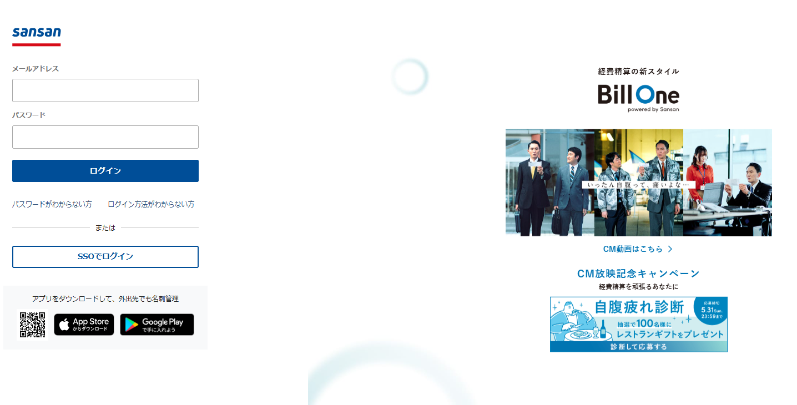

1件数百円のコストは、年間で数百万円の損失です。
どこへ、いくら送っても手数料は一律 8 円。
賢い企業は、もう始めています。
ALL TRANSACTIONS
専門知識は一切不要。いつもの業務と同じ操作感で、次世代の決済を。
Technology Inside
複雑な「秘密鍵」の管理や「ガス代」の準備は、すべてGatewayが自動代行。あなたは振込ボタンを押すだけ。
暗号資産特有の「ウォレット作成」「シードフレーズの保管」といった、ミスが許されない複雑なプロセスを排除しました。
経理・財務担当者が使い慣れた「銀行のネットバンキング」に近い直感的なデザインを採用。導入したその日から、教育コストなしで運用を開始できます。
もう、銀行の窓口や複雑なウォレット操作に縛られない。
ブロックチェーン決済で最大の障壁となる「ガス代（ETH等）」の準備はGatewayが代行。 経理担当者は、暗号資産を意識することなく、日本円感覚でJPYCを送金・管理できます。
個人の独断による送金を物理的に不可能にする、申請・承認の分離ワークフローを搭載。 「誰が・いつ・何のために」送金したのか、すべてのログが改ざん不能な形で記録されます。
承認ステップ
最大10段階設定可
証跡管理
全取引のCSV出力
複数の専用ツールを行き来する必要はありません。
直感的な管理画面で、日々の決済業務を効率化します。
取引先ごとにウォレットアドレスを登録して一元管理。アドレスの複数登録や変更にも柔軟に対応し、手入力による誤送金リスクを排除します。

背景をクリックすると閉じます
「申請者」と「承認者」を分け、送金時の多段階承認ルートを設定可能。組織のガバナンス規定に沿った、安全な運用体制を構築できます。
背景をクリックすると閉じます
「経理部用」「事業部用」など、用途ごとの自社ウォレットリストを作成・管理。資金を明確に分別管理することで、会計処理をスムーズにします。
背景をクリックすると閉じます
暗号資産特有の手数料（ガス代）をGateway側で建て替える「ガスレス送金」に対応。都度の暗号資産購入の手間をなくし、日本円での後払いが可能です。
背景をクリックすると閉じます
「いつ・誰に・いくら」送ったか。期間、取引先、ウォレットなどの条件で入出金履歴を瞬時に検索。ブロックチェーン上の記録と照合し、透明性を担保します。
背景をクリックすると閉じます
取引履歴やウォレットリストをCSV形式で出力可能。改ざん不可能なデータを元にした信頼性の高い監査証跡として、会計監査にもスムーズに対応できます。
背景をクリックすると閉じます
透明性の高い料金プランで、導入後のコスト削減を。
初期費用 0円 | 2週間無料トライアル実施中
Included Features